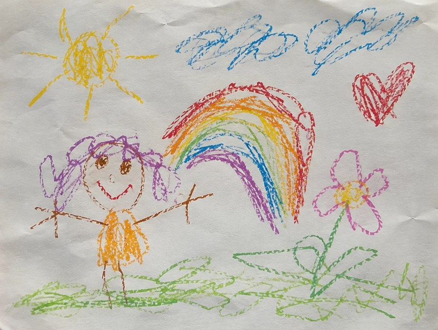
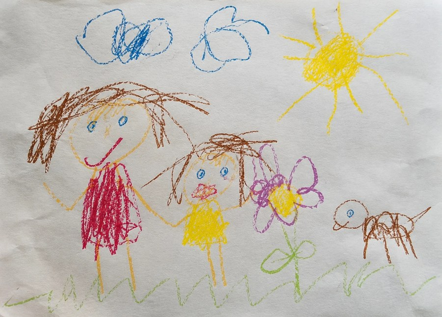
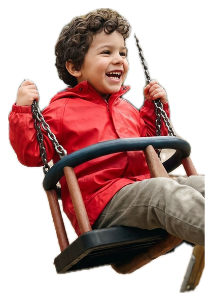
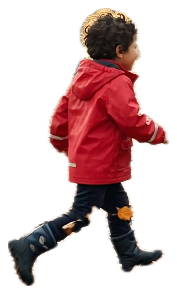
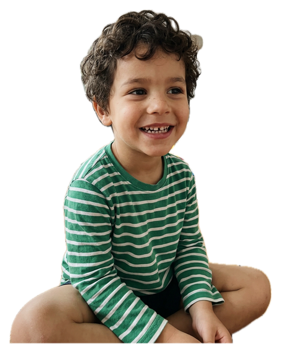

Chronik


 Unsere Woche
Unsere Woche


 Zum FesthaltenUnser
Zum FesthaltenUnserZoobesuch

 Zum FesthaltenUnser
Zum FesthaltenUnserNovember
Theos
Kunstwerke
Kunstwerke





Theo im November

 5 MonateHanne im November
5 MonateHanne im November


 Hanne wächstJuniJuliAugustSeptemberOktoberNovember
Hanne wächstJuniJuliAugustSeptemberOktoberNovember